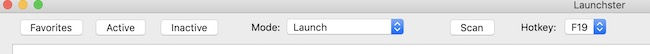

|
|
Launchster Help |
Usage

The first time you use Launchster, you need to click on the Scan button. After a brief delay, an icon will be shown in the Active group for each of the applications installed on your computer.Launchster queries the macOS Spotlight database for the list of installed applications, so Spotlight search results must include applications to ensure that icons appear after scanning (this is the default for macOS). The Search Privacy cannot exclude any locations on external drives where applications may also be installed to ensure those icons appear.
Use the Scan button again after applications are installed or removed from your computer. New applications will be added to the Active group. Any deleted applications will be removed from the appropriate group.
Select the Favorites, Active, or Inactive buttons to see the contents of each group.
Select Move to Favorites mode, Move to Active mode, or Move to Inactive mode and click any application's icon to move it to the desired group.
To start an application, select Launch mode and click on the application's icon. Launchster will automatically minimize when the application starts. Click on the Launchster icon in the dock or press the hotkey to restore it.
Select the desired hotkey to restore Launchster when it is minimized.
The group contents, current group, hotkey, and window size and position are saved for the next time Launchster is used.